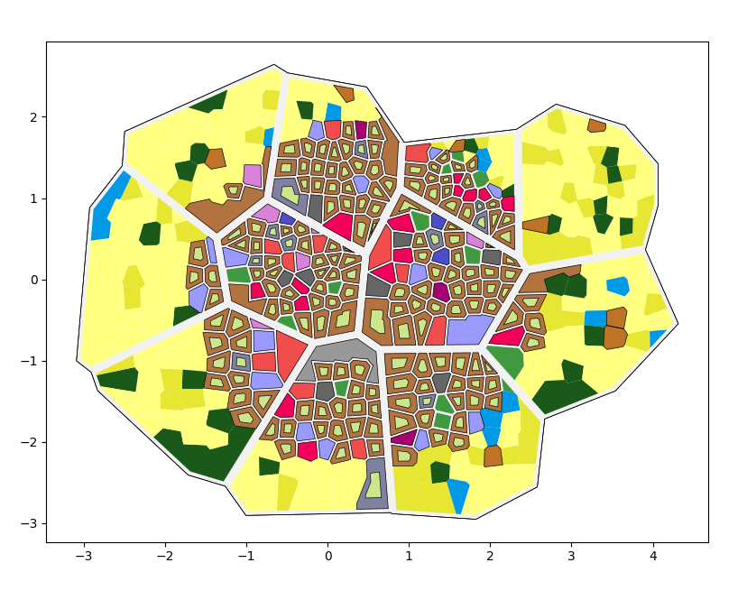

Générateur de ville: Projet PTON¶
L’objectif de ce projet est de pouvoir générer et visualiser le plan d’une ville à partir de certaines conditions.
Utilisation¶
Pour configurer la génération de la ville, ouvrez city.py dans src et modifiez les valeurs attribuées à l’objet City.
La class City est de la forme:
City(population, density, has_walls=False, has_castle=False, has_river=False)
Vous pouvez aussi modifier le chemin où la ville générée sera enregistrée.
Pour cela, modifier la chaîne de caractère passée en arguments à tools.json.
Ce chemin sera important pour pouvoir lancer la visualisation ensuite.
Note
Le chemin par défaut utilisé par la visualisation est /generated_city/city.json
Voici un exemple de configuration possible pour la ville à générer:
city = City(10000, 10000, has_walls=True, has_castle=True)
tools.json(city, '/generated_city/city.json')
Pour lancer la génération:
python3 src/city.py
Pour visualiser la génération:
python3 src/viewer.py *chemin_du_fichier*
Note
.py.Voici un exemple de ville générée avec les paramètres présentés précédemment:
Spécification¶
Ce projet a été réaliser sous Python, en utilisant les librairies suivantes:
attrs==21.2.0
certifi==2021.5.30
click==8.0.1
click-plugins==1.1.1
cligj==0.7.2
cycler==0.10.0
Fiona==1.8.20
geopandas==0.9.0
iniconfig==1.1.1
kiwisolver==1.3.1
matplotlib==3.4.2
munch==2.5.0
numpy==1.21.1
packaging==21.0
pandas==1.2.5
Pillow==8.3.0
pluggy==0.13.1
py==1.10.0
pyparsing==2.4.7
pyproj==3.1.0
PyQt5==5.15.4
PyQt5-Qt5==5.15.2
PyQt5-sip==12.9.0
pytest==6.2.4
python-dateutil==2.8.1
pytz==2021.1
scipy==1.7.0
Shapely==1.7.1
six==1.16.0
toml==0.10.2
userprovided==0.9.1